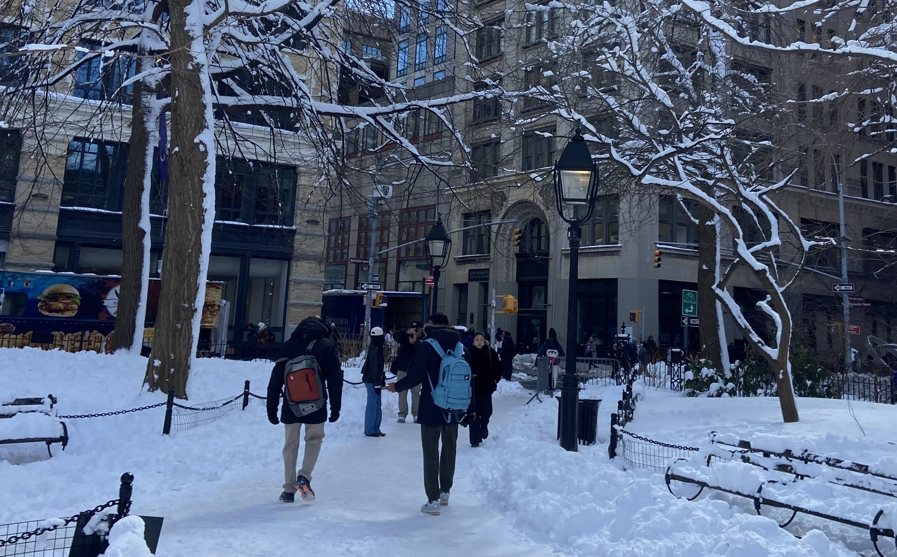

In many ways, my indebtedness to Professor Subhash Khot

I took Honors Analysis of Algorithms during my first semester at NYU, and it was one of the first times I experienced the glories of algorithms at full blast. It has truly been an honor to have been his student.
The class had a very large and positive effect on my life. I learned how to struggle, to take bigger risks, only to realize how much more interesting life simply gets. The ethos of problem solving is timeless, the output may not be visible immediately, but somewhere down the line, as he put it, it will always show.
I am currently taking his complexity course, and I'm a bit less proud to say I've been struggling through most of it. I still put in as much effort as I can, hoping to develop my mathematical and theoretical maturity as I go. I don't really know when, or even if, I'll continue doing theory, but this is surely something I shall hold close to my heart.
I hold very fond memories of grinding through homeworks throughout the week and preparing for finals, most of which I shared with two of my classmates.